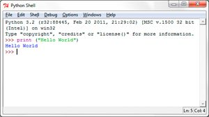
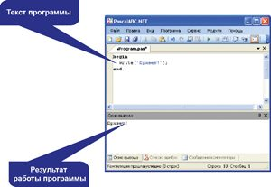
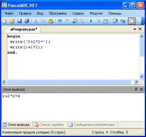
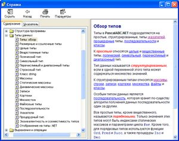

Желание упростить и ускорить всевозможные расчеты присуще человеку с древних времен. Создавая различные приспособления для счета, человек прошел долгий путь. Сегодняшний компьютер способен выполнять сотни миллионов операций в секунду. Для решения вычислительных задач требуется сначала составить алгоритм их решения, а затем записать его в виде программы, используя какой-либо язык программирования.
Язык программирования устанавливает набор правил, определяющих внешний вид программы и действия, которые выполнит исполнитель под ее управлением.
Язык программирования Паскаль (Pascal) используется для обучения программированию и является базой для ряда профессиональных языков программирования.
Существует большое количество сред программирования, поддерживающих язык Паскаль: PascalABC, FreePascal, Delphi, GNU Pascal, Dev—Pascal, Rad Studio и др. В учебном курсе используется среда PascalABC (с ней вы работали, знакомясь с учебными компьютерными исполнителями).
14.1.Команда вывода
Демонстрировать работу любой программы имеет смысл только тогда, когда она выводит какую-либо информацию.
Программа на языке Pascal (тело программы) должна начинаться со слова begin, а заканчиваться словом end и точкой. Программа, состоящая из этих команд, разделенных пробелом или переводом строки, может быть запущена на выполнение, но она ничего не делает. Добавим в нее команду вывода приветствия:
begin
write(‘Привет!’);
end.
Результат работы программы отражается в нижней части окна программы PascalABC в окне вывода (пример 14.1).
Команда write( ); предназначена для вывода данных.
Текст, который нужно вывести на экран, заключают в апострофы (одинарные кавычки). Этот текст не анализируется и выводится на экран в том виде, в котором он записан. Текст можно записать как на русском, так и на любом другом языке. Текстом может быть произвольный набор символов.
В программе может быть несколько команд вывода. Если необходимо вывести текст, записанный в несколько строк, то используют команду writeln( ). Буквосочетание «ln» (сокращение от англ. line — линия, строка), записанное в конце команды, означает, что после вывода нужно перевести курсор в новую строку.
Пример 14.2. Выведем на экран компьютера следующий текст: «Привет! Я компьютер!!! Я умею выполнять программы! Сегодня ты написал свою первую программу, а я ее выполнил. Сейчас на экране – результат этой программы».
Используя сочетание команд write и writeln, текст можно расположить по-разному.
Как вы уже знаете, текст в команде write( ), записанный в кавычках, не анализируется. Если кавычки опустить, то производится анализ тех данных, которые записаны в скобках. Например, если в скобках написать арифметическое выражение, то сначала вычисляется его значение, а затем выводится результат.
Пример 14.3. Посчитаем значение выражения 2 + 2 ∙ 2.
Если записать выражение в кавычках, то будет выведено само выражение. При отсутствии кавычек на экран будет выведено значение данного выражения.
14.2. Понятие типа данных
На практике редко приходится писать программы, которые решают только одну задачу. Обычно программы пишутся для решения целого класса задач, которые можно сформулировать в общем виде.
С такими задачами вы уже сталкивались в курсе математики. Например, решение задачи «Найдите площадь прямоугольника» можно записать так: S = a ∙ b, где переменные a и b обозначают соответственно длину и ширину прямоугольника, а S — площадь. Зная эту формулу, можно найти площадь любого прямоугольника.
В программировании для решения задач в общем виде также используют переменные. Поскольку с такими переменными будет работать компьютер, то они должны храниться в его памяти.
Информацию, представленную в пригодном для обработки на компьютере виде, называют данными.
Переменная в программировании — это именованная ячейка памяти, хранящая значение переменной.
Компьютер может обрабатывать данные разных типов: целые и действительные числа, символы, тексты и др.
Тип данных определяет способ хранения данных в памяти компьютера, диапазон возможных значений данных и операции, которые с этим типом данных можно выполнять.
Для того чтобы использовать какую-либо переменную, ее необходимо описать. Описание переменных выполняется до начала программы (команды begin) (пример 14.4). При описании переменной выделяется память для хранения значения этой переменной. В процессе выполнения программы значение переменной может изменяться.
Для описания переменных используется команда var (сокращение от англ. variable — переменная).
Формат записи команды следующий:
var <имя переменной>: <тип>;
Для обозначения имени переменной используются буквы латинского алфавита, цифры и знак «_». Первым символом должна быть буква или знак подчеркивания.
Тип данных real в языке программирования Pascal позволяет работать с числами и выполнять над ними арифметические действия: сложение, вычитание, умножение и деление.
14.3. Оператор присваивания
Одной из основных команд для обработки данных в программе является оператор присваивания.
Оператор присваивания предназначен для того, чтобы:
- задавать значения переменным;
- вычислять значения арифметического выражения (результат вычисления будет записан как значение переменной).
Формат записи оператора присваивания:
<имя переменной>:= <выражение>;
(Рассмотрите пример 14.5.)
В записи арифметического выражения используются знаки математических действий — сложения, вычитания, умножения, деления:
|
Математические операции |
Запись в Pascal |
| + (сложение) |
+ |
| – (вычитание) |
— |
| ∙ (умножение) |
* |
| : (деление) |
/ |
Приоритет выполнения операций соответствует принятому в математике: сначала выполняются умножение и деление, а затем сложение и вычитание. Для изменения порядка действий в выражениях можно использовать скобки.
Для записи обыкновенной дроби используется знак деления. Знак умножения опускать нельзя. Целая часть дробного числа отделяется от дробной части точкой.
(Рассмотрите пример 14.6 и пример 14.7.)
14.4. Ввод данных
Начальные значения переменным можно задавать не только с помощью оператора присваивания, но и путем ввода с клавиатуры. В этом случае, если необходимы вычисления с новым набором значений исходных данных, текст программы не нужно изменять.
Команда read( ) предназначена для ввода данных. В скобках через запятую перечисляются имена переменных, значения которых необходимо ввести.
Ввод данных происходит в нижней части окна программы PascalABC. Для этого используется окно «Ввод данных». После нажатия кнопки «Ввести» или клавиши «Enter» введенные значения переносятся в окно вывода. После завершения работы программы в этом же окне будет выведен результат (пример 14.8).
14.5. Структура программы
Все программы на языке программирования Pascal имеют общую структуру.
В программе можно выделить следующие разделы:
- заголовок программы (является необязательным);
- подключаемые библиотеки (модули) (если подключать дополнительные библиотеки не нужно, раздел отсутствует; известные библиотеки: Drawman, Robot, RobTasks);
- описание переменных с указанием их типа;
- описание вспомогательных алгоритмов (если использовать вспомогательные алгоритмы не нужно, раздел отсутствует);
- begin … end. — служебные слова, обрамляющие тело основной программы, в которой находятся исполняемые команды. Слово begin начинает исполняемую часть программы, а end. (точка в конце обязательна) ее завершает.
Таким образом, в минимально возможном наборе программа состоит только из пустого тела программы: begin end. Программа, содержащая все разделы, представлена в примере 14.9.
Для каждого раздела определено ключевое служебное слово, которым начинается данный раздел программы. При написании программы ключевые слова выделяются полужирным шрифтом.
| Компьютер (от англ. computer — вычислитель) — устройство или система,
способные выполнять заданную четко определенную изменяемую последовательность
операций (чаще всего численных расчетов).
Электронно-вычислительная машина (ЭВМ) — комплекс технических средств, где основные функциональные элементы (логические, запоминающие, индикационные и др.) выполнены на электронных приборах, предназначенных для автоматической обработки информации в процессе решения вычислительных задач. Никлаус Вирт (род. в 1934 г.) — швейцарский ученый, специалист по информатике, один из известнейших теоретиков в области разработки языков программирования, профессор компьютерных наук. Создатель и ведущий проектировщик языков программирования Паскаль, Модула-2, Оберон. По традиции, начавшейся в 1978 г. с примера из книги Брайана Кернигана и Денниса Ритчи «Язык программирования Си», первая программа на любом языке программирования должна выводить на экран приветствие миру:  |
|
Пример 14.1. Окно среды PascalABC с результатом работы программы:  Пример 14.2. Текст программы:
Результат работы программы:
Пример 14.3. Текст программы:
Результат работы программы:  Две команды write в программе можно объединить в одну, отделив текст от выражения запятой:
|

|
До начала 1950-х гг. ХХ в. программисты ЭВМ при создании программ пользовались машинным кодом. Запись программы на машинном коде состояла из единиц и нулей. Машинный код принято считать языком программирования первого поколения. Типы данных не использовались. Первым языком программирования, в котором появилась возможность создавать переменные, считается Ассемблер. В этом языке вместо машинных кодов стали использовать команды, записанные текстом. Ассемблер относится к языкам программирования второго поколения. В 1957 г. появился язык Фортан, открывший эру языков программирования третьего поколения. Он позволил использовать разные числовые типы данных, необходимые для сложных расчетов: целые, вещественные (действительные) и комплексные. Дальнейшее развитие языков программирования позволило добавить возможность работы с другими типами данных. Современные языки программирования позволяют работать с большим количеством типов данных. В PascalABC реализовано более 30 различных типов данных.  Пример 14.4. Примеры описания переменных:
Диапазон возможных значений типа real задается числами в стандартном представлении от – 1.8 ∙ 10308 до 1.8 ∙ 10308 . Самое маленькое положительное число типа real приблизительно равно 5.0 ∙ 10–324 . При вычислениях в числе хранится до 16 цифр. |
| Пример 14.5. Примеры записи оператора присваивания:
x:= 7; Пример 14.6. Запишем оператор присваивания на Pascal для математических выражений:
Пример 14.7. Запишем оператор присваивания, после выполнения которого значение переменной a увеличится в два раза, а переменной b уменьшится на 3. В Pascal допустимы команды присваивания следующего вида: a:= a * 2; Смысл такой команды следующий: из ячейки памяти извлекается значение переменной a , затем оно умножается на 2, результат записывается в ту же ячейку памяти. Старое значение переменной a будет потеряно. Запись оператора присваивания для изменения значения переменной b следующая: b:= b — 3; |
|
Пример 14.8. Ввести два числа, найти и вывести их сумму. Текст программы :
Ввод данных: |

|
Пример 14.9. Программа, содержащая все разделы (подсчитывается количество закрашенных клеток в поле Робота размером 10 x 10):
Результат работы программы:
|

2. Как изменится результат работы программы, если в исходном тексте заменить все команды write на writeln?
3. Измените программу так, чтобы текст на экране выглядел следующим образом:
Ты сегодня написал свою первую программу!!!
Я выполнил твою программу. Посмотри на экране результат!
2 Внесите необходимые изменения в программу из примера 14.3, чтобы действия выполнялись в том порядке, в котором записаны, т. е. сначала сложение, а потом умножение.
3 Вводится возраст пользователя в годах. Определите возраст пользователя через 5 лет.
4 Напишите программу, в которой вводятся два числа a и b. Затем первое число уменьшается в 2 раза, а второе увеличивается на 30. Выведите измененные значения переменных.
5 Напишите программу для вычисления значения числового выражения:
2.  .
.
3.  .
.